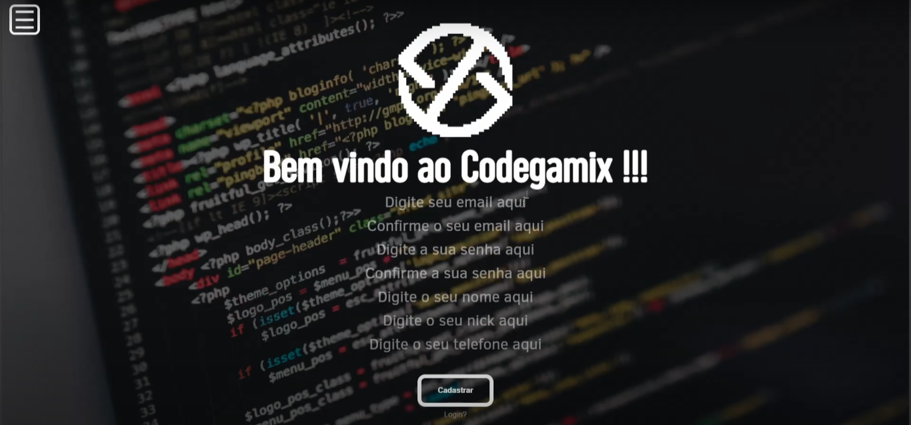

Introdução
*Jogo web para ensinar logica de programação
*RPG,Quiz e Block
*Lições em pseudo codigo
*Lições em formato de jogos
*Competitividade entre usuarios
Codegamix é um jogo que ensinará aos usuários a Logica de programação com o
uso do peseudo-código ele integra mecânicas de quiz Blocks e RPG
proporcionando uma aprendizagem interativa e competitividade entre os
usuários o objetivo deste projeto é proporcionar aos usuários o entendimento
de forma divertida sobre como os programas funcionam assim ensinando a
lógica que há nas linguagens de programação informação.
Metodo
*Lições seguidas de quiz dos conteudos
*Blocks:prencher peseudo-códigos,revisando so conteudos
*Historia imersiva,formato RPG
*niveis estilo RPG onde e precisaráprogamar para jogar
forma que os usuários irão aprender será através do ensinamento e da prática após
a visualização do conteúdo sobre a matéria resolverão um quiz sobre o tema para
reforçar os ensinamentos haverá níveis com os blocks que irão relembrar levels anteriores
e para garantir a prática de programar há níveis no estilo RPG no qual o usuário precisará
programar para solucionar o problema isso enquanto acompanha uma história imersiva assim
o usuário aprende relembra e pratica com conteúdo.

Site
Então vamos às funcionalidades do site
para se cadastrar e logar no site é como qualquer outro site basta inserir as
informações e confirmá-las para logar É possível usar e-mail nome de usuário
ou telefone e a senha o quiz vem junto com os ensinamentos ele começa com
o ensinamento de um conteúdo seguido das perguntas sobre este conteúdo cada
resposta errada tira uma vida podendo cada pergunta tirar apenas uma vida o
usuário ficar sem vidas ele não poderá começar nem jogar nenhum nível para
recuperar vidas o usuário poderá esperar Duas horas ou então praticar a prática
é um compilado de perguntas com tudo que o usuário já aprendeu ao responder
tudo o usuário recupera uma vida após passar por alguns inves Quiz o usuário
deverá passar pelo Blox sendo semelhante ao Scratch o usuário deverá completar
as lacunas de código e se estiver certo uma simulação do código aparecerá na
tela se as lacunas forem completadas erradas o usuário perde uma vida após passar
por vários níveis o usuário deverá passar pelo RPG nele o jogador controlará Cícero
protagonista da história do codegamix para fazer cer mover ou atacar o jogador deverá
programar E então Executar a ação com cada fase tendo um objetivo em específico o cícero
deverá atacar primeiro os inimigos se o usuário cometer um erro e isso levar morte de
Cícero o jogador perde uma vida o codegamix proporciona uma experiência de
aprendizado com diversão e interatividade sobre a lógica de programação utilizando
diferentes metodologias para o usuário aprender relembrar e aplicar o conhecimento
de uma forma prática e imersiva a junção de competitividade desafios e uma narrativa
envolvente faz da aprendizagem mais Atrativa assim ensina os usuários de forma lúdica
os conceitos fundamentais